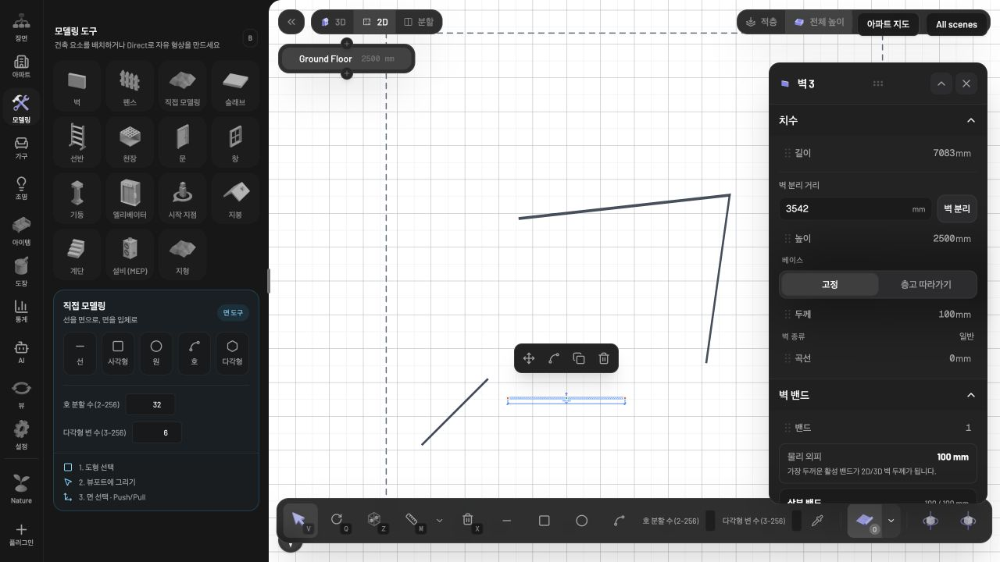

최근 수정 전체 운영 배포 완료
apt.intm.kr에 103개 파일과 별도 도면 추출기 v13을 반영했습니다. 지정 포크의 배포 브랜치, 실제 PM2 실행 경로, BUILD_ID, 공개 JS 해시와 운영 브라우저를 대조했습니다.
자동 모델링의 벽·개구부·공간 구획 개선, 벽 합치기/분리와 편집, 축·각도 스냅, 저장/Undo, 벽 구성·물량, 모델/2D 내보내기 변경을 포함합니다.
| 커밋 | 33d05e5b3cf1641f5b47e0f1126fc97a50efb72e |
|---|---|
| 원격 | qurkuid/editor · deploy/floorplan |
| 운영 | apt-subdomain :3024 · PID 19708 · online |
| 실행 경로 | /Volumes/DATABASE/floorplan-releases/20261001-33d05e5b/apps/editor |
| BUILD_ID | 4KVOp6H___JQLAJQVjd4f |
| 추출기 | docVersion 9 → 13 · 소스/운영 SHA256 일치 |
| 테스트 | 502개 파일 독립 실행 · 4,158개 통과 · 기존 skip 1개 |
| 빌드 | 로컬/운영 타입 검사·프로덕션 빌드 통과 · Biome 통과 |
운영 DB는 SQLite 온라인 백업으로 보존했고, 기존 앱과 추출기·PM2 구성도 롤백용으로 보관했습니다. 사용자 장면을 변경하지 않고 별도 검수 장면을 사용했습니다.
기존 모델에 새 자동 추출 결과를 적용하려면 도면을 다시 분석·생성해야 합니다. 저장된 모델의 형상은 배포만으로 자동 변경하지 않습니다.
운영 2D 브라우저 검수
운영 검수 장면 열기 · 최종 저장 version 11
- 벽 추가: 원래 2개에서 3개로 증가. 중복 생성 없이 1개 추가.
- → X축 잠금: 끝점의 Z 좌표가 시작점과 정확히 일치.
- 분리→합치기: 저장된 벽 수 3→4→3 확인.
- 끝점 드래그: 약 1.5° 오차로 이동했을 때 약한 축 스냅 적용, 최종 각도 0° 및 길이 7.083m 확인.
- 45° 약한 스냅: 약 0.34° 오차의 입력에서 최종 저장 각도 -45° 확인.
- 벽 삭제→Undo→새로고침: 45° 벽 복원 및 저장 유지 확인.
- 운영 에디터 콘솔 오류 0개.

스냅 범위 ±2°는 요청된 설정입니다. 앞선 SketchUp 실행은 OS 입력 차단으로 직접 측정에 이르지 못했으므로 SketchUp의 정확한 수치와 동일하다고 주장하지 않습니다.
8개 도면 운영 재추출
모든 도면을 공개 운영 API의 refresh=1로 재분석했습니다. HTTP 200, docVersion 13, Cache-Control: no-store를 확인했습니다.
| 도면 | 버전 | 벽 | 개구부 | 공간 | 응답 |
|---|---|---|---|---|---|
| 래미안장전 89B㎡ | 13 | 77 | 20 | 10 | 200 / no-store |
| 해운대자이2차 109A㎡ | 13 | 64 | 21 | 12 | 200 / no-store |
| 화명롯데캐슬카이저 177B㎡ | 13 | 95 | 21 | 14 | 200 / no-store |
| 대연힐스테이트푸르지오 154B㎡ | 13 | 65 | 24 | 16 | 200 / no-store |
| 더샵센텀파크1차 197㎡ | 13 | 84 | 23 | 17 | 200 / no-store |
| 래미안포레스티지 101D㎡ | 13 | 152 | 30 | 12 | 200 / no-store |
| 사직롯데캐슬더클래식 148A㎡ | 13 | 64 | 24 | 14 | 200 / no-store |
| 번영로센텀파크에일린의뜰 81㎡ | 13 | 65 | 18 | 13 | 200 / no-store |
8개 모두 개구부·공간 배열·축척·이미지 크기가 앞선 로컬 v13 검수 결과와 일치합니다. 벽 배열은 6개 도면에서 동일하며, 장전·대연 각 1개 짧은 벽 구간의 끝점/두께에 차이가 있습니다. 운영 재추출만으로 모든 픽셀의 완전성을 새로 보증한 것은 아니며, 공간/연결 검수는 아래 이전 2D 보고서와 함께 확인할 수 있습니다.
증거와 남은 제한
릴리스 정보 · 실제 런타임 · 운영 빌드 로그 · 8개 공개 API 결과 · 로컬/운영 비교 · 브라우저/저장 검증 · 테스트 결과
기존 테스트 skip 1개와 Next.js middleware→proxy 안내 경고가 남아 있습니다. 외부 배포 승인 검토의 이전 거절은 사용자가 지정 대상의 전체 배포를 재요청한 뒤 해소됐고, 실제 원격 푸시와 운영 전환이 완료됐습니다.
반영 파일 103개
- apps/editor/app/api/apartments/[id]/plans/[planId]/vector/route.ts
- apps/editor/components/ai-chat-panel.tsx
- apps/editor/components/apt-search-panel.tsx
- apps/editor/components/apt-trace.tsx
- apps/editor/components/scene-loader.tsx
- apps/editor/lib/ai-cli-plan.ts
- apps/editor/lib/ai-contract.ts
- apps/editor/lib/ai-control.test.ts
- apps/editor/lib/ai-control.ts
- apps/editor/lib/ai-provider.test.ts
- apps/editor/lib/ai-provider.ts
- apps/editor/lib/apt-vector-scene.test.ts
- apps/editor/lib/apt-vector-scene.ts
- apps/editor/lib/intm-construction-materials.ts
- apps/editor/lib/quantity-takeoff.test.ts
- apps/editor/lib/wall-assembly-takeoff.test.ts
- packages/core/src/index.ts
- packages/core/src/lib/link-default-construction.test.ts
- packages/core/src/lib/slab-polygon.test.ts
- packages/core/src/lib/slab-polygon.ts
- packages/core/src/lib/space-detection-history.test.ts
- packages/core/src/lib/space-detection.test.ts
- packages/core/src/lib/space-detection.ts
- packages/core/src/lib/wall-construction.test.ts
- packages/core/src/lib/wall-construction.ts
- packages/core/src/lib/wall-length.test.ts
- packages/core/src/lib/wall-operations.test.ts
- packages/core/src/lib/wall-operations.ts
- packages/core/src/registry/types.ts
- packages/core/src/schema/nodes/wall.ts
- packages/core/src/store/actions/wall-actions.ts
- packages/core/src/store/history-control.ts
- packages/core/src/store/use-scene-commits.test.ts
- packages/core/src/store/use-scene-dirty-tracking.test.ts
- packages/core/src/store/use-scene.ts
- packages/core/src/systems/wall/wall-footprint.test.ts
- packages/core/src/systems/wall/wall-footprint.ts
- packages/core/src/systems/wall/wall-mitering.test.ts
- packages/core/src/systems/wall/wall-mitering.ts
- packages/editor/src/components/editor-2d/renderers/floorplan-registry-layer.tsx
- packages/editor/src/components/editor/export-manager.tsx
- packages/editor/src/components/editor/floorplan-panel.tsx
- packages/editor/src/components/editor/use-floorplan-background-placement.ts
- packages/editor/src/components/tools/wall/wall-drafting.test.ts
- packages/editor/src/components/tools/wall/wall-drafting.ts
- packages/editor/src/components/tools/wall/wall-snap-geometry.ts
- packages/editor/src/components/ui/helpers/contextual-helper-panel.tsx
- packages/editor/src/components/ui/helpers/wall-edit-controls.tsx
- packages/editor/src/components/ui/sidebar/panels/settings-panel/index.tsx
- packages/editor/src/hooks/use-auto-save.test.ts
- packages/editor/src/hooks/use-auto-save.ts
- packages/editor/src/hooks/use-keyboard.ts
- packages/editor/src/i18n/dictionary/ai-chat.ts
- packages/editor/src/i18n/dictionary/settings.ts
- packages/editor/src/index.tsx
- packages/editor/src/lib/conform-wall-geometry.ts
- packages/editor/src/lib/dxf-export.test.ts
- packages/editor/src/lib/dxf-export.ts
- packages/editor/src/lib/floorplan-image-export.test.ts
- packages/editor/src/lib/floorplan-image-export.ts
- packages/editor/src/lib/glb-export.test.ts
- packages/editor/src/lib/glb-export.ts
- packages/editor/src/lib/glb-wall-topology.test.ts
- packages/editor/src/lib/sketchup-wall-contract.test.ts
- packages/editor/src/lib/sketchup-wall-contract.ts
- packages/editor/src/lib/stl-export.test.ts
- packages/editor/src/lib/stl-export.ts
- packages/editor/src/lib/wall-direction-lock.test.ts
- packages/editor/src/lib/wall-direction-lock.ts
- packages/editor/src/store/use-editor.tsx
- packages/mcp/src/bridge/index.ts
- packages/mcp/src/bridge/scene-bridge.test.ts
- packages/mcp/src/bridge/scene-bridge.ts
- packages/mcp/src/modeling-agent-manual.ts
- packages/mcp/src/ontology-manual.test.ts
- packages/mcp/src/resources/resources.test.ts
- packages/mcp/src/tools/construction-tools.test.ts
- packages/mcp/src/tools/create-wall.test.ts
- packages/mcp/src/tools/photo-to-scene/photo-to-scene.test.ts
- packages/mcp/src/tools/room-tools.test.ts
- packages/nodes/src/body/move-session.test.ts
- packages/nodes/src/duct-fitting/parametrics.test.ts
- packages/nodes/src/wall/construction-geometry.test.ts
- packages/nodes/src/wall/construction-geometry.ts
- packages/nodes/src/wall/construction-preview.test.tsx
- packages/nodes/src/wall/construction-preview.tsx
- packages/nodes/src/wall/construction-visual.test.ts
- packages/nodes/src/wall/construction-visual.ts
- packages/nodes/src/wall/floorplan-affordances.test.ts
- packages/nodes/src/wall/floorplan-affordances.ts
- packages/nodes/src/wall/move-endpoint-tool.tsx
- packages/nodes/src/wall/panel.tsx
- packages/nodes/src/wall/renderer.tsx
- packages/nodes/src/wall/tool.tsx
- packages/nodes/src/zone/floorplan.test.ts
- packages/nodes/src/zone/floorplan.ts
- packages/nodes/src/zone/quantities-panel.tsx
- packages/nodes/src/zone/renderer.tsx
- packages/viewer/src/index.ts
- packages/viewer/src/lib/polygon-union.test.ts
- packages/viewer/src/store/use-viewer.ts
- packages/viewer/src/systems/wall/wall-cutout.tsx
- packages/viewer/src/systems/wall/wall-system.tsx